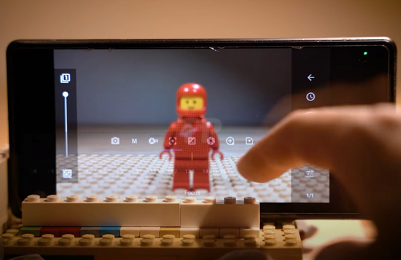
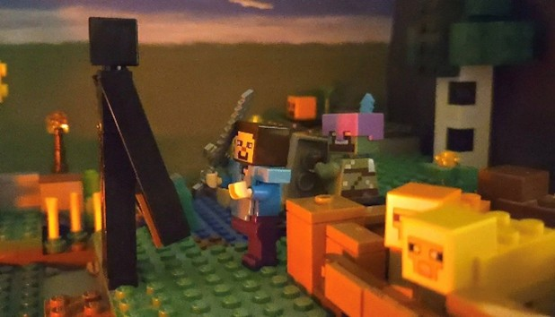
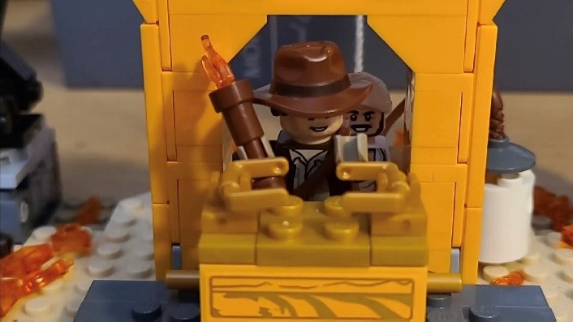
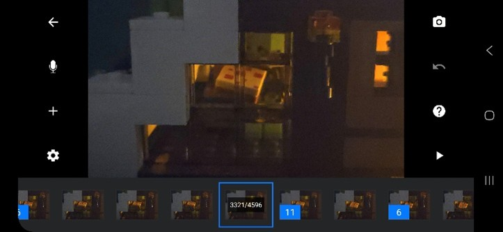

(p1) Now for the fun part. Once you have all the materials necessary, you can start to animate. Note that animation is time-consuming, so making a goal to make a 30-minute video as your first project is probably not a good idea. It's best to start off with a small test project, which might look janky and will be anywhere from 30 seconds to 4 minutes, depending on your story and patience.

How to move a character:
(p2) Using a tile plate when starting out is recommended because it allows you to pick up a character or prop at any time and place it back in the exact position you found it. Picking up a character is very important when moving a character's limb without accidentally moving its other limbs or even the whole set. When you have your pieces loosely placed or stuck to the ground with putty, it can be hard to position them back exactly where you need them if you pick them up.
Walking:
(p3) Walking is an easy thing to mess up and can be fairly noticeable in your animation. It's best to practice animating a walking cycle that helps you remember which leg to move next. One of the strategies I use is moving the arms in a pattern that lets me see which leg needs to move based on whether the arm is swinging forward or backward. You can also practice a running cycle.


Freezing frames:
(p4) When first starting out, it's ok to film at a lower frame rate, like 12 or 8 frames per second, or even freeze the frame for a second to allow the viewer to take in the scene for a second. Freezing frames can be very useful when you don’t know how long you want to linger on a shot when animating, and will speed up the animating process a ton. When animating, I plan what shots I want to use freeze frames on by making sure every object has completed its motion, so a character doesn't freeze up while walking.